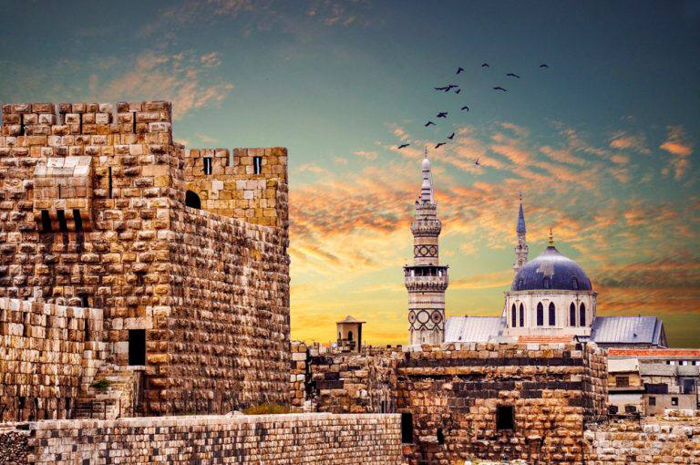

مدينة دمشق- سوريا

حضارة سوريا غنية عن التعريف. ولعل خير دليل علي
عظمة التراث الذي تحمله سوريا مهما مر بها من أزمات
هو تسجيل 6أماكن سياحية بين مدن ومواقع أثرية سورية
في قائمة اليونسكو للتراث العالمي حتي اللحظة. كانت
واحدة من أوائل المعالم تسجيلا علي رأس مدينة دمشق
هذه القائمة عام 1979
دمشق حيث مساجد العصر الأموي وكنائس البيزنطيين
والمدارس العريقة والأسواق التاريخية مثل سوق
الحميدية. نحن لا نتحدث عن موقع واحد أو اثنين نحن
بصدد الحديث عن مدينة بأكملها ... حالة منفردة من التراث
المتكامل حيث تستطيع أن تلمس التاريخ في كل زاوية من زواياها